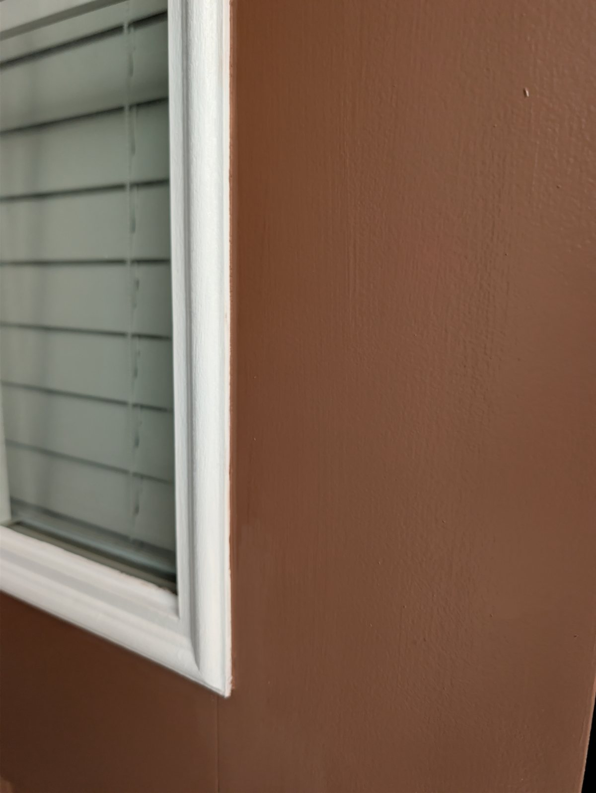

Small details, difficult surfaces, and lessons learned from hands-on specialty painting.
Interior doorsAugust 2026
Why Paint Interior Doors Horizontally?
I had five interior doors to refinish, and they were in rough shape. Because I wanted a durable, smooth finish, I chose alkyd enamel.
One challenge with doors is getting a consistent finish without runs or unevenness. I prefer to paint doors horizontally, where the surface is easier to control and the paint can level properly.
Painting the door flat lets the enamel level out smoothly, without runs.
Supporting five doors at once
The problem was figuring out how to support five doors while I worked. I used a sawhorse for one and buckets and cardboard boxes for the others — simple, cheap, and effective.
But it created another problem: even after the paint was dry to the touch, the supports could still mark the finish. That led to the second trick — floating the doors.
The lesson
Doors level best painted flat — but once they're horizontal, you need a way to keep the fresh finish from ever touching whatever is holding them up.
Door refinishingAugust 2026
Floating Doors: A Simple Trick for Faster Refinishing
When painting several doors with slow-drying alkyd enamel, waiting for each one to dry completely before flipping it can make the job take much longer.
I found a simple solution: float the door on screws. I placed two screws into each end of the door, positioned on the top and bottom edges where the holes would never be visible once the door was rehung. The screws act as tiny supports, keeping the freshly painted surface off the sawhorse, buckets, or boxes.
Instead of waiting roughly six hours — or until the next day — I could carefully flip the door after about 30 minutes and keep working, without the wet finish touching anything.
The lesson
Paint the door horizontally, and float it on screws so the fresh finish stays above the supports. Simple idea, big difference.
Front entry doorAugust 2026
Front Door Restoration: Where the Trim Meets the Door
This front entry door had scratches, dings, peeling paint, deteriorated wood, and glue showing beneath the trim. It needed careful repair and preparation before applying a durable exterior enamel.
The most challenging part was creating a clean line where the brown door meets the white detailed trim.

Detail of the finished transition between the exterior door enamel and the white trim.
A Lesson in Trim Painting
I learned not to start by taping the trim. Because of its shape, getting tape tightly into the corners is difficult.
Instead, I taped the brown door surface, carefully following the corner, and painted the trim white. I used just enough paint to avoid seepage under the tape. After about 30 minutes, while the white paint was still soft, I removed the tape.
Then I used a one-inch brush to slowly pull the brown enamel along the corner. I rested my hand on the unpainted door for stability. When needed, I used a small piece of paper as a guide to keep the brush bristles from touching the white trim.
It took patience and a steady hand.
The lesson
Detailed trim work isn't always about using more tape. Sometimes the cleanest result comes from careful brushwork, good preparation, and taking the time to get the line right.
Have a door or a detail that needs this kind of attention?
Free estimate, no obligation. Serving Orlando and surrounding areas.